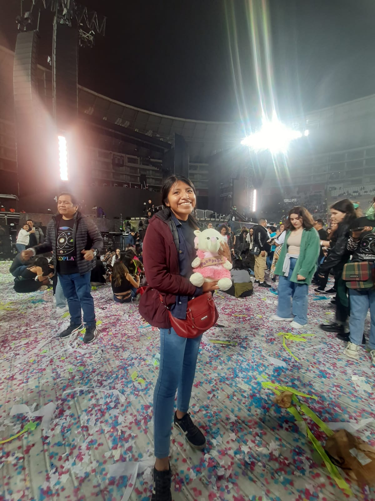

Biografía

Nombre completo: Maria Isabel Quispe Sinticala
Estudios: Licenciada en Enfermería, actualmente estudiante de Ingeniería de Sistemas
Colegio: San Luis Gonzaga CIRCA

Nombre completo: Maria Isabel Quispe Sinticala
Estudios: Licenciada en Enfermería, actualmente estudiante de Ingeniería de Sistemas
Colegio: San Luis Gonzaga CIRCA